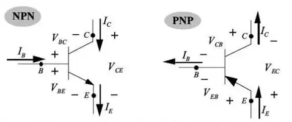
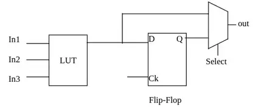

<html>
<head>
  <title> teoría de transistores y FPGAs <title>
  <link rel="stylesheet" href="/styles.css">
  <meta charset="utf-8">
  <meta name="viewport" content="width=device-width, initial-scale=1" />
  <link rel="icon" type="image/png" sizes="32x32" href="/favicon.png">
</head>
<body>
  <header>
    <a href='/'>[sobre mí]</a>
  </header>

  <article>
  <p>TEORÍA DE TRANSISTORES Y FPGAS</p>
  <hr>

  <p>Los transistores son uno de los componentes principales en la electrónica, y pueden funcionar como amplificadores, interruptores o moduladores de señal. Un transistor es un dispositivo con tres terminales, uno de los cuales actúa como terminal de control, regulando el comportamiento de los otros dos terminales. Existen dos tipos principales de transistores: BJT y FET.</p>

  <p>Los transistores <b>BJT</b> (Bipolar Junction Transistors) son dispositivos formados por dos uniones PN, una en polarización directa y otra en polarización inversa. Esta configuración permite el flujo de electrones y huecos entre el colector y el emisor, mientras que la base regula este flujo. Los transistores BJT pueden ser de dos tipos: NPN, donde una región de tipo N se coloca entre dos regiones de tipo P, y PNP, donde una región de tipo P se coloca entre dos regiones de tipo N. Cada una de estas regiones corresponde a un terminal: base, colector o emisor.</p>

  

  <p>Los <b>FET</b> (Field-Effect Transistors) son dispositivos semiconductores que controlan el flujo de corriente mediante un campo eléctrico. Entre ellos, los MOSFET son los más comunes, compuestos por una puerta (gate), drenaje (drain) y fuente (source). A diferencia de los BJT, los MOSFET se controlan por voltaje en lugar de corriente, lo que los hace más eficientes energéticamente. Su alta velocidad de conmutación y baja disipación de potencia los convierten en componentes esenciales en la electrónica digital, especialmente en circuitos integrados como procesadores y memorias.</p>

  <p>Los circuitos integrados (ICs) son básicamente circuitos compuestos por componentes electrónicos como transistores, resistencias, condensadores y otros, que están conectados físicamente y ensamblados en un chip para realizar una función específica. Pueden ser tan simples como una puerta lógica de la serie 7400, o tan complejos como microprocesadores o microcontroladores.</p>

  

  <p><b>FPGA</b></p>

  <p>Las <b>FPGAs</b> (Field Programmable Gate Arrays), a diferencia de otros dispositivos como microcontroladores o microprocesadores diseñados para interpretar y ejecutar un conjunto de instrucciones, permiten configurar el hardware mediante conexiones físicas programables. Esto significa que, en lugar de tener un circuito fijo, la FPGA permite reconfigurar sus componentes internos, como transistores y puertas lógicas, para formar circuitos específicos que realicen tareas particulares.</p>

  <p>Las FPGAs consisten en un conjunto de bloques lógicos interconectados que agrupan celdas lógicas. Las celdas lógicas son componentes electrónicos, principalmente LUTs, multiplexores y flip-flops.</p>

  <p>Una <b>LUT</b> (Look-Up Table) es una tabla configurada dentro de una FPGA utilizada para implementar funciones lógicas de manera eficiente. Almacena el resultado de todas las combinaciones posibles de entradas, permitiendo generar rápidamente la salida correspondiente para cada conjunto de entradas.</p>

  <p>Un <b>multiplexor</b> es un componente digital que selecciona una de varias entradas y la dirige a una única salida, según señales de control. Funciona como un interruptor, donde las señales de control determinan qué entrada se pasa a la salida en cada momento.</p>

  <p>Un <b>flip-flop</b> es un circuito de almacenamiento de un solo bit de información, que puede mantener su estado (0 o 1) hasta que recibe una señal de control, como un pulso de reloj. Su funcionamiento se basa en cambiar su estado de salida en respuesta a esta señal, permitiendo la sincronización y el almacenamiento de datos en sistemas digitales, como registros o contadores.</p>

  

  <p>Los bloques lógicos de las FPGAs están conectados mediante una matriz de rutas programables, lo que permite cambiar las conexiones entre ellos según sea necesario. Esta capacidad de reconfiguración hace que el hardware sea flexible, permitiendo crear y modificar circuitos personalizados para realizar funciones específicas y adaptarse a diferentes tareas.</p>

  <p>Las FPGAs incluyen otros elementos además de los bloques lógicos, como memorias, bloques de entrada y salida que facilitan la interacción con el exterior, e incluso microcontroladores integrados en algunos modelos, lo que las hace muy completas para diversos tipos de proyectos.</p>

  <p><b>Configuración de FPGA</b></p>

  <p>El proceso de diseño de una FPGA comienza con la creación del código HDL, que define la lógica y el comportamiento del circuito. Este código se sintetiza para generar un netlist, que es un diagrama de las conexiones y elementos lógicos necesarios. A continuación, se realiza el proceso de mapeo, colocación y enrutamiento, donde se asignan las conexiones y bloques lógicos a áreas específicas de la FPGA. Finalmente, se genera un archivo de bitstream, que se carga en la FPGA, configurando las conexiones físicas y permitiendo que el dispositivo ejecute el programa diseñado.</p>

  <p><a href="https://www.youtube.com/watch?v=H5MV7U8UHhk">Vídeo recomendado</a></p>

  <p>Descargar <a href="https://verilator.org/guide/latest/">verilator</a></p>

  </article>
</body>
<style>
  * {
    font-family: monospace;
  }

  header {
    display: flex;
    justify-content: flex-end;
  }

  body{
    display: flex;
    flex-direction: column;
    width: 95%;
    max-width:750px;
    margin:auto;
  }

  article{
    max-width: 100%;
    margin:auto;
  }

  pre {
    max-width: 100%;
    overflow-x: auto;
    padding-top: 1rem;
    padding-bottom: 1rem;
  }
</style>
</html>
